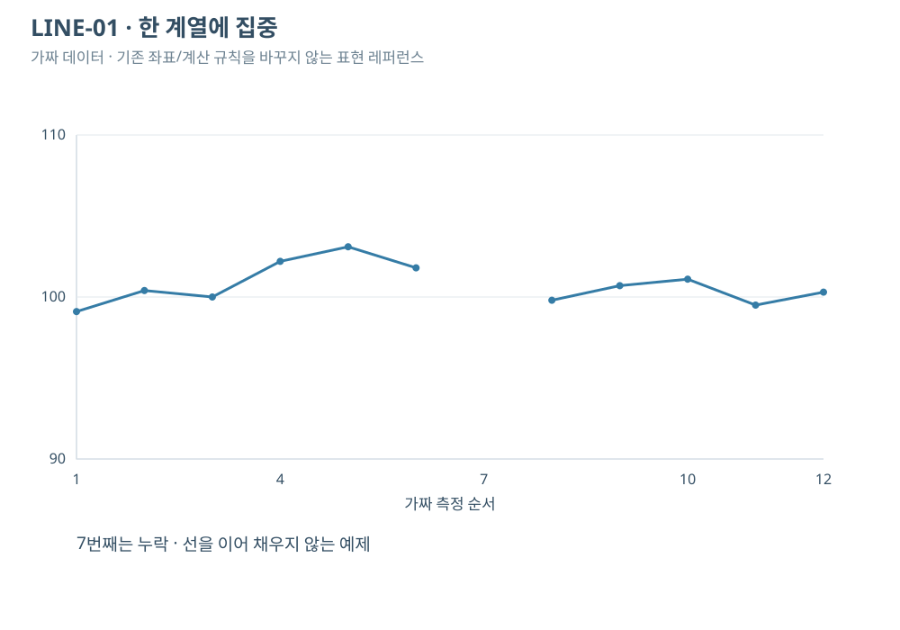

설비마루 / ER·선그래프 표현 레퍼런스
기존 사내 좌표·원천 값·연결 유지
LINE-01 · 한 계열에 집중
단일 선과 누락 구간을 명확히 표시
노치 9시
보간 미추가
단위·균일도 미정
가짜 데이터

사내 AI에게: LINE-01의 표현을 참고해 기존 사이트 그래프만 바꿔줘. 기존 좌표·원천 값·계산 규칙은 유지해줘.
수정 요청서
표현 설정 JSON
Streamlit 참고 코드